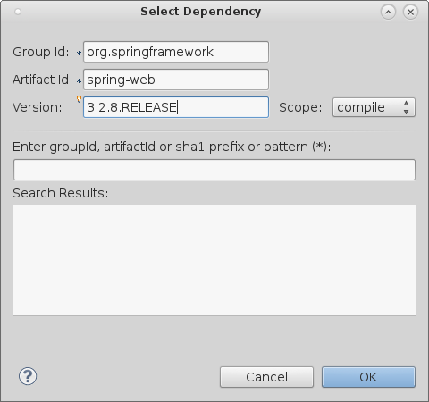
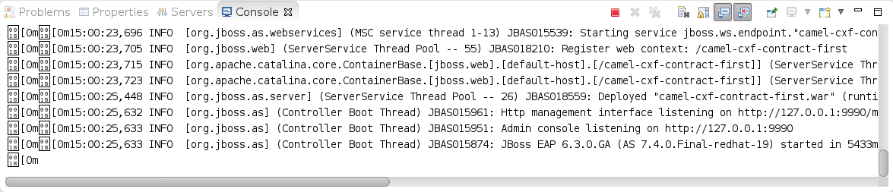

Getting Started - Camel on EAP
This guide demonstrates step-by-step how to create a sample Camel project in JBoss Developer Studio (JBDS) using the Maven archetypes that come out of the box. Specifically, we’ll be creating a contract-first based web services java project. We’ll then convert that project to a WAR file so that it can be deployed to JBoss EAP. Finally, we’ll deploy the project and verify that it is running.
Here are a few assumptions before you begin:
- You already have a supported JDK installed (ie, Oracle’s JDK version 6 or 7)
- You already have Maven version 3.x installed
- You already have JDBS installed (tested with version 7.1.1, but should work with newer)
- You already have the “JBoss Integration and SOA Development” tools for JBDS installed
- You already have JBoss EAP installed (tested with version 6.3.0, but should work with others)
After you’ve met all the prerequisites, you can proceed with the guide.
Step 1: Create A New Fuse Project
Start off by creating a new project. Click File->New->Project… to start the “New Project” wizard.
Select “Fuse Project“ as the project type and click “Next >“.
Specify your preferred project location (or let it use the default) and click “Next >“.
Select the appropriate Maven archetype from the list. The one we use for this example is “io.fabric8:camel-cxf-contract-first-arch:1.0.0.redhat-379“. Enter your preferred Group Id, Artifact Id, Version, & Package. When done, click “Finish“.
Your new project should be created. If this is the first time, it can take a few minutes as JBDS downloads all the required Maven dependencies.
Step 2: Convert Project To WAR Format
First we need to change the packaging type in the Maven POM so that we will build a WAR file instead of the default JAR file. To do so, open up the project’s pom.xml file, click on the drop-down list next to “Packaging:“, and select “war“ as the type. Save your changes when done.
Next, we need to tell the Eclipse Maven Plugin to update the project configuration so that JBDS will add the appropriate facets and display the project structure correctly. So first, right-click on the project and select “Maven->Update Project…“ to start the “Update Maven Project” wizard.
Make sure the project is selected and click “OK“.
You should notice that the project structure changes a bit.
Now we will need to add some Maven dependencies so that we can bootstrap our Camel Context in a Servlet container. Open up the project’s pom.xml file, and select the “Dependencies“ tab.
Click on the “Add…“ button to start the “Select Dependency” wizard.

Fill out the input boxes as shown below and click “OK“ when done. Don’t forget to save your changes.

Once we have all of our dependencies in place, we can create our deployment descriptor (ie, the web.xml file). So right-click on the “Deployment Descriptor:“ section in the project view and select “Generate Deployment Descriptor Stub“. This will create a skeleton web.xml file that you can use as a starting point.
Now double-click on the “Deployment Descriptor:“ section in the project view to edit the web.xml file. We will need to add several elements.
- A
context-paramelement to tell Spring where the XML files are located. - A
listenerelement to load Spring’s ServletContextListener which will bind the Spring Context to the Servlet’s lifecycle. - A
servletelement to name the CXF Servlet. - A
servlet-mappingelement to map the CXF Servlet to a URL pattern.
If you’d like, you can just copy/paste the following XML:
1 |
|
Save your changes and close the web.xml file.
By default, the generated CXF configuration will boot up an embedded Jetty server and bind to “http://localhost:9000/order/“. Since we will be deploying to a server that already has a Servlet container, we can let CXF use the provided one instead. So first, find the camel-cxf.xml file in the “Project Explorer“ tab and open it up.
We simply need to change the address attribute of the cxf:cxfEndpoint element from “http://localhost:9000/order/“ to “/order/“.
The result should look like the image below. Save your changes and close the file.
Finally, you may have noticed that the “Problems“ tab is showing some errors. This is because the Maven archetype that we used has a WSDL that contains 2 minor issues.
To fix the issues, we’ll need to edit the WSDL file. To do so, either double-click on the error in the “Problems“ tab, or on the WSDL in the “Project Explorer“ tab to open the order.wsdl file. Now locate the wsdl:binding element. It should be toward the bottom of the file. It should contain wsdl:input and wsdl:output elements. Both of which have a soap:body element with a parts attribute as shown below.
Simply remove the parts attribute. The resulting file should look like the image below. Save your changes and close the file.
That’s it for the changes. The project should now be ready to deploy to JBoss EAP.
Step 3: Deploy Project To JBoss EAP
If you don’t have one already, create a new server configuration in JBDS. Click on the “Servers“ tab. If you don’t have any server configurations, you will see a link like the image below. Click on the link to start the “New Server“ wizard.
Select “JBoss Enterprise Application Platform 6.1+“ and click “Next >“.
Click the “Browse“ button and navigate to the root directory of your JBoss EAP installation. Click “Next >“ when done.
Select your desired options, or leave the defaults and click “Next >“.
Select the project from the “Available:“ pane and click the “Add“ button.
You should see the project move over to the “Configured:“ pane as shown below.
Click the “Finish“ button when done. You should now have a new server configuration as shown below.
Next, start the server. You can do so by clicking the  icon as shown below.
icon as shown below.
If the server starts successfully, you should see no errors in your “Console“ tab.

Finally, open up a web browser (or use the one built into JBDS by clicking the  icon) and navigate to “http://localhost:8080/camel-cxf-contract-first/soap/order?wsdl“. If the everything was successful, you should see the WSDL contents displayed as shown in the image below.
icon) and navigate to “http://localhost:8080/camel-cxf-contract-first/soap/order?wsdl“. If the everything was successful, you should see the WSDL contents displayed as shown in the image below.
At this point, you have successfully created and deployed a Camel/CXF web service to JBoss EAP. You can do further testing using a tool like SoapUI (or any SOAP service testing tool).
Getting Started - Camel on EAP
https://blog.joshdreagan.com/2015/04/10/getting_started__camel_on_eap/